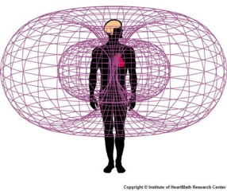
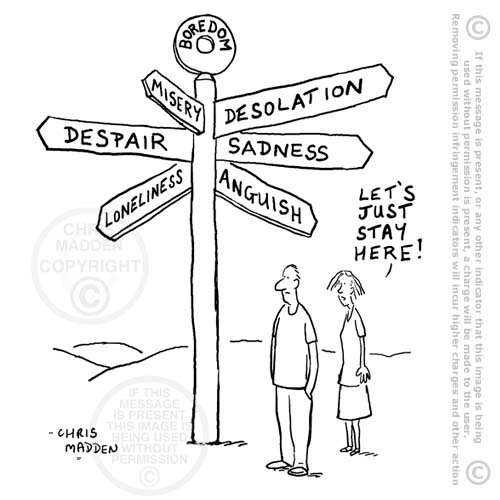

The Power of the Human Heart
It has been scientifically proven that greater awareness of personal energy, especially the electro-magnetic field around the heart, significantly helps to reduce tension, create coherence and improve performance.
In fact, effective brain functioning is dependent on coherent signals and information coming from the heart. Relying largely on the analytical skills of the brain limits thinking, stifles inspiration and builds stress.
The electro-magnetic field of the heart changes depending on what emotions we are feeling. We actually broadcast our feelings through the 'heart-field', whether positive or negative.
The more we are in tune with our heart-field, the more we are able to release negative emotion and access inspiration.
The heart is also the centre of our intuition. Recent scientific experiments have shown that the electro-magnetic field of the heart responds much more quickly to external stimuli than the brain, often as much as six seconds before the brain has registered the event, and sometimes even before the event has occurred!
Unfortunately, the role of the heart has been under-valued, especially in western society where schools and universities focus on developing the rational skills of the brain. While this has resulted in important achievements in terms of analytical thought and cognition, it has also generated high levels of stress which inhibit thinking and performance.
The more we are in tune with our heart-field, the more we are able to release negative emotion and access inspiration
Growing neglect of the heart and over-reliance on the rational skills of the brain build negativity.
A heart-based approach to rights-based advocacy
Many of us can be drawn to specific activities or occupations through a heart-based sense of compassion and empathy. This is particularly true for those working in charities, NGOs and other caring or service roles.
Yet the reality of the work tends to centre around brain-based skills of logic, organizational planning and structure. And before long, our initial heart-based motivation may begin to wane.
Individuals may also inadvertently place an emotional 'wall' around their heart in an attempt to protect themselves from the emotional pain and suffering experienced by their clients. Ironically, negativity will almost certainly be transferred anyway, leading to a growing neglect of the heart and over-reliance on the rational skills of the brain.
The 'chatterbox' mind takes over and stress begins to build.
As it is passed energetically among colleagues, such negativity may even begin to 'infect' the organization as a whole through what psychologists commonly call 'emotional contagion'.
Tap into the power of your heart
In our coaching programs, we help clients tune in to the power of their heart by teaching a number of techniques to enhance energy awareness and alignment, including:
- Heart-Field Expansion [™]: a powerful tool for clearing negative emotion and clarifying your intentions in line with your authentic desires.
- Guided meditation and mindfulness training for 'presence', grounding and balance.
- Creative visualisation: using the power of the imagination to create a clear picture of the desired outcome as a key first step towards manifestation.
By using these techniques, our clients are soon able to release any energetic or emotional blocks and fulfill their potential to create the life they desire.
Our approach to energy coaching is informed by skills and insights gained through the following modalities:
- Vipassana meditation (www.risingfalling.org)
- Shamballa Reiki (www.markallison.org)
- Cranio-sacral Biodynamics (www.integrated-cranial-workshop.com)
Discover the power of your heart, discover your authentic self and your true soul desires